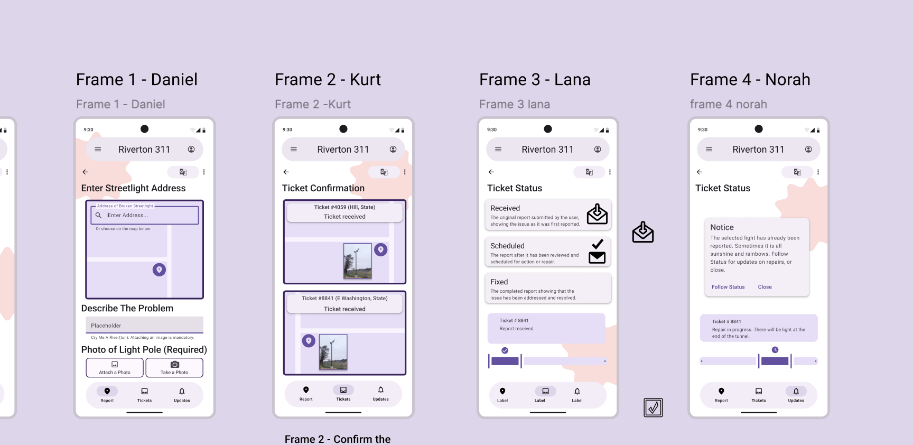

Riverton 311: a streetlight report in four screens
· Design sprint
This was the design sprint. My team picked Riverton 311, an app from the City of Riverton for reporting a broken streetlight and checking on it later. We built four screens in Figma with the Material 3 kit, one screen each. Our roles changed every round, and between rounds we showed the work to other teams and to our instructor and changed it based on what they said.
What the brief told us
The brief listed what residents had already told the city:
- They want proof the report went through.
- They want to know roughly when the light will be fixed.
- They check back and want a clear status.
- The same light gets reported several times, which slows the queue.
The city only asked for one thing: a ticket number on every report.
What we spent the time on
Most of our talking was about status. Someone who checks back wants to know where their report is, so we decided on a progress bar that shows which stage the ticket is in during the repair, and a clear place to find updates.
The other thing was making four separate screens feel like one app. Each of us built one, so every dimension of every component and frame had to line up with the others, and the flow from one frame to the next had to feel natural. We also spent a lot of time on the smaller choices: font size, colors, and how big the app title at the top should be.

The screens
- Frame 1: Enter streetlight address
- Type an address or choose on the map, describe the problem, and attach or take a photo of the light pole. The photo is required.
- Frame 2: Ticket confirmation
- Shows the ticket number and where the light is, so people can see the report went through.
- Frame 3: Ticket status
- The three stages a report goes through: Received, Scheduled, and Fixed.
- Frame 4: Ticket status, existing report
- What happens when the light someone picked has already been reported. A notice says so, with a way to follow the existing ticket, and the progress bar shows where that repair is.
- Frame 5: Language settings (added in Phase 3)
- Choose a different language from a list, with a search field. The earlier screens got a button that leads here.
The three statuses
| Status | What it tells the resident |
|---|---|
| Received | The report as it was first submitted. |
| Scheduled | The report has been reviewed and scheduled for repair. |
| Fixed | The repair is finished and the issue is resolved. |
What we were aiming for
- Make the status easy to see at a glance.
- Give people proof their report went through, and an easy way to follow it. Point repeat reports to the ticket that already exists.
- Keep every frame consistent so the whole thing feels like one flow.
What changed between rounds
Phase 1
The first version was rough on purpose. We wanted the basic screens and the overall flow down before worrying about making everything perfect. We worked out the main steps a user would go through and made something we could test and improve.
Phase 2
The biggest change was Frame 1. We made it mandatory to attach a photo of the light pole, and let the user either pick one from their camera roll or take a photo right then.
We also used the feedback on the other frames. We made the navigation bars at the top and bottom match across all four, and we gave Frame 3 the same progress bar as Frame 4 and adjusted its visuals and layout.
Phase 3
One piece of feedback was to choose graphics for the Ticket Status page that matched the rest of the design style. We also made the ticket confirmation include the picture and the map.
The new challenge was a screen for choosing a different language. We built that, and added a button to the language options on the earlier screens.
My part
I stayed on Frame 4 the whole time. Figuring out the design system at the beginning was the hard part for me, and using it in Figma was challenging at first. Once I had it down, I was able to help my teammates with Figma too.
What went well
We were given a set of graphics, colors, and elements to use, which made it easy to keep the four frames consistent. I also found it easy to work with my team. We split up the responsibilities but helped each other instead of working completely separately, and we made decisions together. Figma made that easy too.
What could have been better
The design system made some steps easier but made the design choices less creative, and it was hard to use other fonts and styles. Getting started was also overwhelming, and figuring out how to lay out each frame's content was challenging at the beginning.